Candidate List 20260906Last night — ZTF: 687 passed basic cuts (19 young) · LSST: 0 passed basic cuts (0 young)Previous Day Next Day
Section 1: New Sources (age<1d) Section 2: Old (1-5d) sources observed last nightplaceholder
Section 2: Older Sources Observed Last Night (4)
0. [ZTF] ZTF26abrqvav (FBOT?) [Back to Top] [Share] [Trigger Swift] [Fritz Alert] [Fritz Source] [Lasair]RA, Dec: 63.66239, 17.24228 4h14m38.97s, 17d14m32.22sGalactic (l, b): 176.86709, -23.70494 WARNING: -3.93 deg from ecliptic plane ext(g-r) = 0.646


TESS: Sectors [43 44 70 71]
SDSS (<15 kpc):Found SDSS phot-z: z=0.03; peak abs mag = -17.70
PS1: 1 source in 3 arcsec Closest: d = 0.37 arcsec photoz=0.56+/-0.14 peak abs mag = -24.80
LegacySurvey: 0 sources in 3 arcsec

Extinction-corrected gr color:
From alerts: -0.17 +/- 0.18 mag
Consistent with synchrotron, g-r>0!
Rise Rate:
g: 0.21 mag/day
r: 0.16 mag/day
Fade Rate:
1. [ZTF] ZTF26abrzjia (Afterglow?FBOT?) [Back to Top] [Share] [Trigger Swift] [Fritz Alert] [Fritz Source] [Lasair]RA, Dec: 41.70543, -2.92394 2h46m49.30s, -2d-55m-26.20sGalactic (l, b): 176.66679, -53.30266 ext(g-r) = 0.042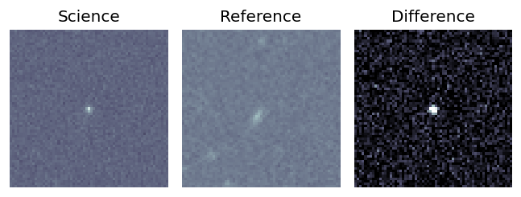
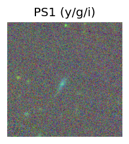
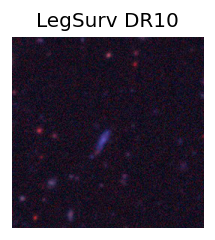
TESS: Sectors 109
SDSS (<15 kpc):Found SDSS phot-z: z=0.11; peak abs mag = -19.75
PS1: 0 sources in 3 arcsec
LegacySurvey: 1 sources in 3 arcsec Closest: d = 0.50 arcsec, 149.9 deg (east of north) photoz=0.53 (68% bounds 0.27, 1.05), type=PSF peak abs mag (ext. corrected) = -23.69 (68% bounds -21.99, -25.5)
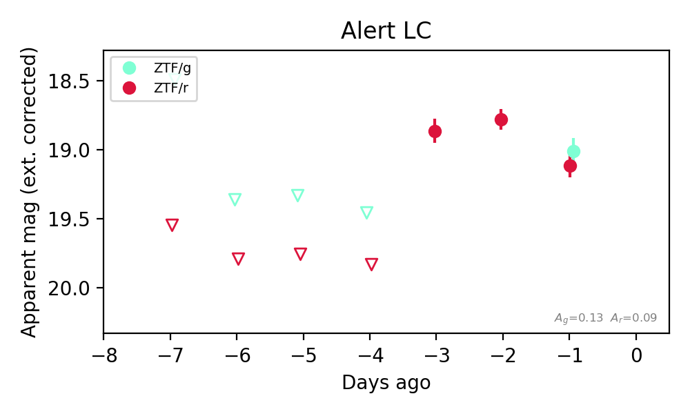
Extinction-corrected gr color:
From alerts: -0.11 +/- 0.12 mag
Consistent with synchrotron, g-r>0!
Rise Rate:
g: 0.14 mag/day
r: 1.02 mag/day
Fade Rate:
r: 0.13 mag/day
2. [ZTF] ZTF26absfire (Afterglow?FBOT?) [Back to Top] [Share] [Trigger Swift] [Fritz Alert] [Fritz Source] [Lasair]RA, Dec: 29.68195, 1.46075 1h58m43.67s, 1d27m38.70sGalactic (l, b): 155.15473, -57.14024 ext(g-r) = 0.026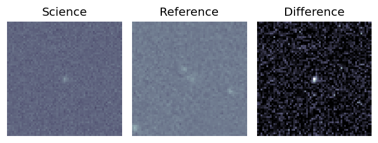
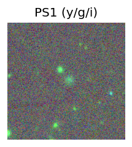
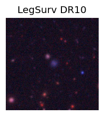
TESS: Sectors [ 4 42 70 97]
SDSS (<15 kpc):Found SDSS phot-z: z=0.88; peak abs mag = -24.30
PS1: 0 sources in 3 arcsec
LegacySurvey: 1 sources in 3 arcsec Closest: d = 1.48 arcsec, 284.4 deg (east of north) photoz=0.13 (68% bounds 0.09, 0.17), type=REX peak abs mag (ext. corrected) = -19.53 (68% bounds -18.61, -20.17)
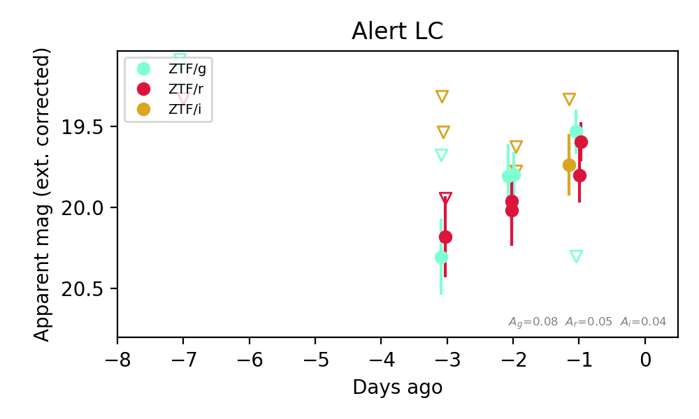
Extinction-corrected gr color:
From alerts: -0.13 +/- 0.17 mag
Extinction-corrected gi color:
From alerts: -0.2 +/- 0.23 mag
Extinction-corrected ri color:
From alerts: -0.07 +/- 0.21 mag
Consistent with synchrotron, g-r>0!
Rise Rate:
g: 0.35 mag/day
r: 0.27 mag/day
Fade Rate:
g: 0.54 mag/day
3. [ZTF] ZTF26absoxvs (Afterglow?) [Back to Top] [Share] [Trigger Swift] [Fritz Alert] [Fritz Source] [Lasair]RA, Dec: 30.05485, 21.28527 2h 0m13.16s, 21d17m6.96sGalactic (l, b): 143.63275, -38.80581 ext(g-r) = 0.096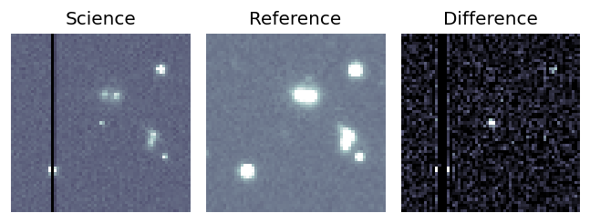
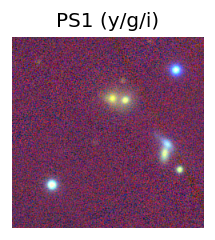
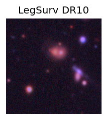
TESS: Sectors [17 42 43 70 71 85]
PS1: 0 sources in 3 arcsec
LegacySurvey: 1 sources in 3 arcsec Closest: d = 5.64 arcsec, 129.7 deg (east of north) photoz=0.37 (68% bounds 0.32, 0.45), type=REX peak abs mag (ext. corrected) = -23.02 (68% bounds -22.64, -23.53)
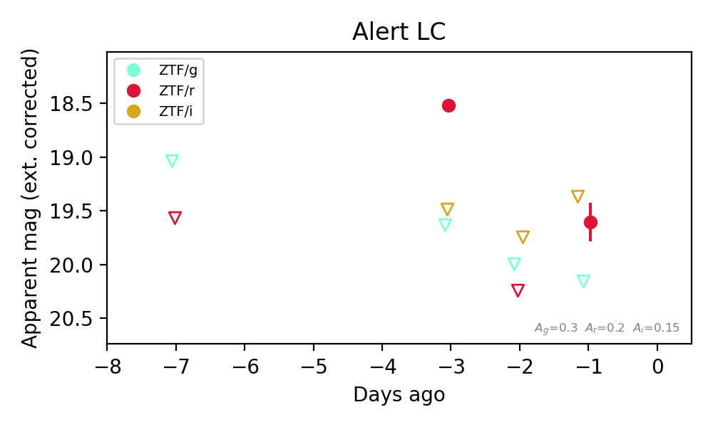
Extinction-corrected gr color:
From alerts: 0.55 +/- 99 mag
Extinction-corrected ri color:
From alerts: 0.24 +/- 99 mag
Rise Rate:
r: 0.61 mag/day
Fade Rate:
r: 1.71 mag/day